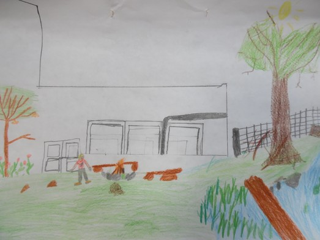

Dieser Kurs von Gesche findet im Schulgarten unserer Schule statt. Die Kinder erkunden die Natur und spielen mit den Dingen, die sie finden. Im Schulgarten gibt es einen kleinen Teich. Dort sind Fische, Molche, Schnecken und Frösche drin. Die Kinder beobachten die Tiere, was sie so treiben. Die Kinder schnitzen und machen auch manchmal ein kleines Lagerfeuer. Wenn das Feuer brennt, singt Gesche ein Lied. Sie haben viel Spaß in diesem Kurs.
Wenn das Wetter richtig gruselig ist, gehen sie in die Werkstatt und dort bauen sie viele Dinge, zum Beispiel Äxte oder andere tolle Sachen, die sie dann wieder gut im Schulgarten benutzen können.
Text von Matheo und Migel
Fotos von Tatjana